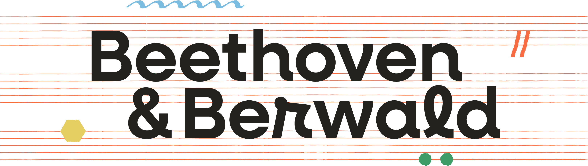

at Siam Ratchada AuditoriumYamaha Music School Fortune Town
Two letters, seven voices
Tap a letter to open it. Each one holds a note to you, the program and the story behind the music.
Seven performers
Tap a stamp to read about each performer.